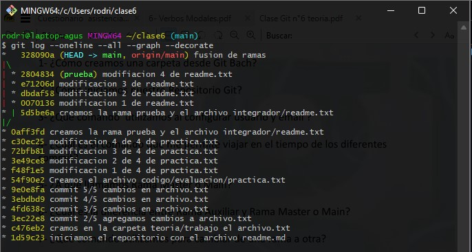
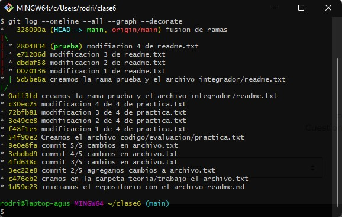

git checkout.Para crear una carpeta desde Git Bash utilizaremos el
comando mkdir. Teniendo en cuenta la dirección en la que
nos encontramos en el sistema de archivos, este espacio
alojará nuestra nueva carpeta, utilizando el comando de este
modo.
usuario@computadora MINGW64 ~
$ mkdir nombre_nueva_carpeta
Nota: Tener en cuenta que el símbolo
~nos indica que estamos en la carpeta de usuario, en este caso sera:/c/Users/usuario/
Si deseamos poner un nombre de carpeta dejando espacio entre las palabras que conforman al nombre deberemos ponerlo entre comillas.
usuario@computadora MINGW64 ~
$ mkdir "nombre nueva carpeta"
Nota: Tener en cuenta que el uso de nombres de carpetas con espacios puede traernos problemas, ya que las direcciones de capetas que contengan espacios siempre deberán escribirse entre comillas.
Para iniciar nuestro repositorio git, debemos
posicionarnos en la carpeta que contendrá nuestro
repositorio, y luego ejecutaremos el comando git init.
usuario@computadora MINGW64 ~/repositorio
$ git init
En este caso el nombre de la carpeta que contiene nuestro repositorio se llama
/repositorioy su dirección completa es/c/Users/usuario/repositorio
Luego de usar el comando git init, veremos que Git Bash
nos indicara en que rama estamos. Esto nos comprueba que el
repositorio fue iniciado. El nombre de la rama se mostrara
entre paréntesis al lado derecho de la dirección actual.
usuario@computadora MINGW64 ~/repositorio (main)
$
El comando que se utiliza para configurar el usuario de manera global es:
usuario@computadora MINGW64 ~/repositorio (main)
$ git config --global user.name "nombre de usuario"
Y el que utilizaremos para configurar el email del usuario es:
usuario@computadora MINGW64 ~/repositorio (main)
$ git config --global user.email "nombre@example.com"
Para ver que configuraciones tenemos guardadas usaremos el comando:
usuario@computadora MINGW64 ~/repositorio (main)
$ git config -l
Nos mostrara una lista con todas las configuraciones aplicadas a Git Bash.
El comando que nos permite viajar en el tiempo es git checkout <hash>
Lo utilizaremos de la siguiente manera:
Primero debemos obtener el hash usando git log --oneline
Nota: debemos tener en cuenta que el comando
git log --onelinenos mostrara solo los primeros 7 caracteres del hash del commit,estos sirven perfectamente para dar la indicación de donde queremos viajar. Otro sera el resultado del comandogit logque nos mostrara el hash completo de los commit.
Después usaremos el numero de hash al commit que deseamos viajar, como veremos en el siguiente ejemplo:
usuario@computadora MINGW64 ~/repositorio (main)
$ git checkout 14f5fd6
En este caso viajaremos al commit con el hash 14f5fd6.
Como veremos nos aparecerá marcado entre paréntesis al lado
de la dirección de la carpeta actual.
usuario@computadora MINGW64 ~/repositorio ((14f5fd6...))
$
Llamamos rama master o main, a una linea de tiempo de commits, esta en particular es la rama principal de un repositorio. Se crea por defecto en el inicio de un repositorio y en esta deberán estar las versiones principales de nuestro proyecto.
La diferencia principal es que la rama main, será nuestra rama principal en esta deberán estar todas las modificaciones y archivos para que nuestro proyecto funcione. En cambio en una rama auxiliar se desprende de la rama main o de otra rama auxiliar, y en esta se trabajara en paralelo de la rama main hasta que las tareas por las que se creo esta rama se hayan cumplido, una vez pase esto se pasara a fusionar la rama auxiliar con la rama main, y se dará comienzo a una nueva version de nuestro proyecto.
Para ello utilizaremos el comando git switch, dando como
dato el nombre de la rama a la que queremos cambiar
usuario@computadora MINGW64 ~/repositorio (main)
$ git switch rama_auxiliar
usuario@computadora MINGW64 ~/repositorio (rama_auxiliar)
$
Si se puede cambiar su nombre por main, esto se hace principalmente por que en ingles el termino master hace referencia al esclavismo. Era la forma de referirse a el 'amo', aquella persona que poseía uh ser humano como esclavo.
Para hacer este cambio de nombre se utiliza el comando:
usuario@computadora MINGW64 ~/repositorio (master)
$ git branch -m master main
usuario@computadora MINGW64 ~/repositorio (main)
$
Este comando no es perdurable, lo que quiere decir es que volverá a llamarse master, cuando cerremos y volvamos a abrir Git Bash.
Para hacerlo de forma permanente debemos usar el comando:
usuario@computadora MINGW64 ~/repositorio (master)
$ git config --global init.defaultbranch master main
De esta manera cada vez que iniciemos el programa se cambiara el nombre de nuestra rama master.
Para crear una nueva rama usaremos el comando git checkout
con la bandera -b continuado por el nombre de la nueva rama.
usuario@computadora MINGW64 ~/repositorio (main)
$ git checkout -b rama_auxiliar
usuario@computadora MINGW64 ~/repositorio (rama_auxiliar)
$
git checkoutComo vimos en el ejercicio anterior con el comando git checkout -b y un nombre podemos crear una rama.
usuario@computadora MINGW64 ~/repositorio (main)
$ git checkout -b rama_auxiliar
usuario@computadora MINGW64 ~/repositorio (rama_auxiliar)
$
Con el comando git checkout y un hash en especifico
podremos trasladar el HEAD nuestro puntero. Y viajaremos
al estado en que teníamos nuestro repositorio a la hora de
hacer ese commit.
Ejemplo:
usuario@computadora MINGW64 ~/repositorio
$ git checkout 14f5fd6
usuario@computadora MINGW64 ~/repositorio ((14f5fd6...))
$
En el caso de que usemos el comando git checkout continuado
del nombre de una rama moveremos el HEAD al último
commit de la rama seleccionada.
usuario@computadora MINGW64 ~/repositorio ((14f5fd6...))
$ git checkout rama_auxiliar
Previous HEAD position was 14f5fd6 commit
Switched to branch 'rama_auxiliar'
usuario@computadora MINGW64 ~/repositorio (rama_auxiliar)
$
El comando que debemos ejecutar para poder ver las ramas y todos los commit de estas graficados, de una manera un poco mas visualmente entendible es:
usuario@computadora MINGW64 ~/repositorio (main)
$ git log --oneline --all --graph --decorate
Un ejemplo de la salida de este comando: 
